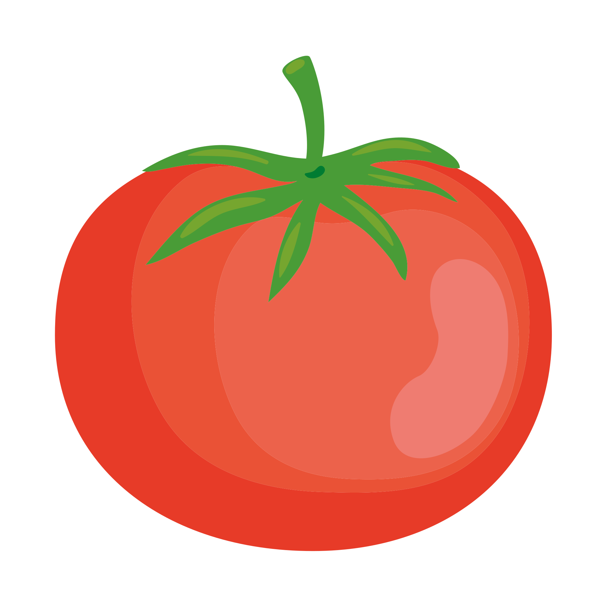
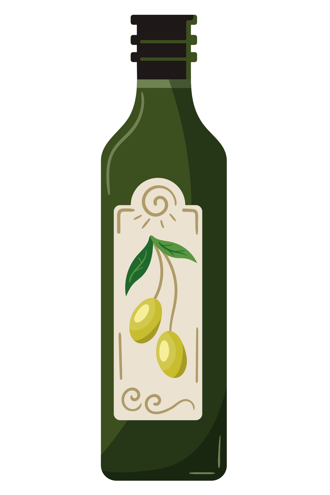
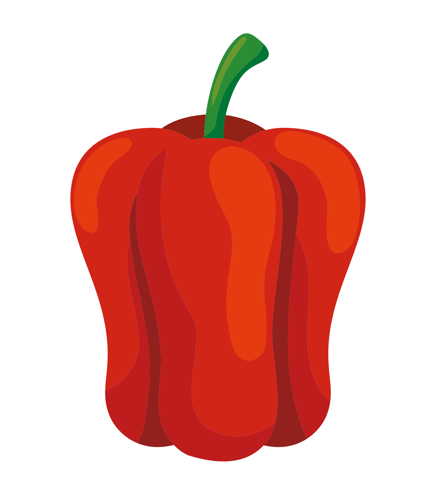
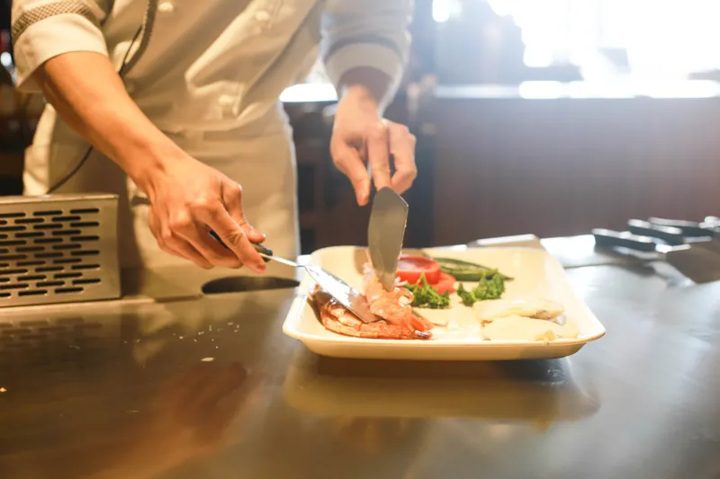

Descubre un mundo de sabores y déjate inspirar por nuestras recetas.
Desde platos sencillos hasta propuestas más elaboradas, tenemos algo para cada ocasión.
¿Quieres verlas todas?
Pizza de pera, jamón y queso gorgonzola
Ver todos los detalles >>Descubre los eventos gastronómicos más interesantes y vive experiencias únicas alrededor de la cocina.
¿Te animas a explorar todo lo que tenemos preparado?
Meat Carnival
Ver todos los detalles >>Organic Food Iberia
Ver todos los detalles >>Descubre la gastronomía como un arte que combina sabor, creatividad y emoción.

¿Quieres conocer el secreto detrás de este proyecto?
¡QUIERO CONOCER TODOS LOS DETALLES!